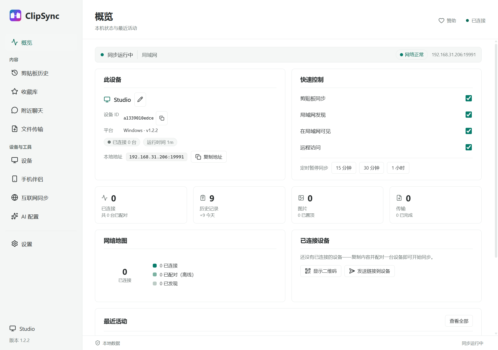
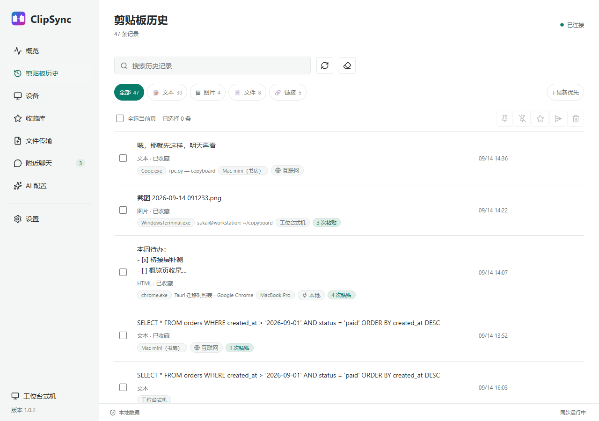
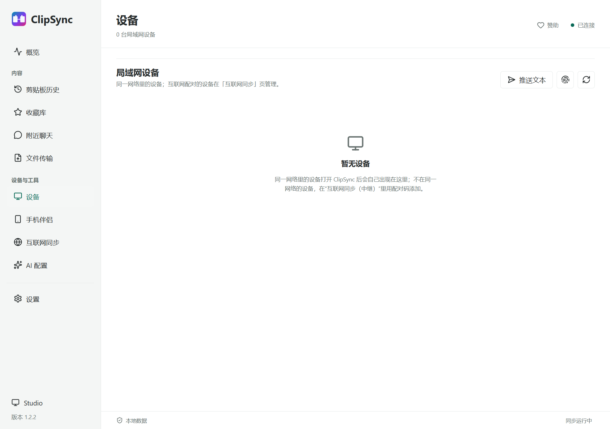
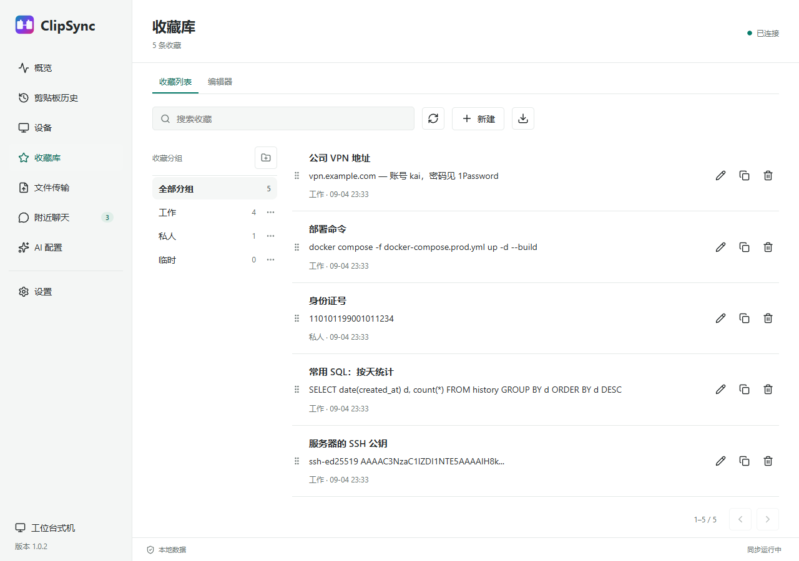
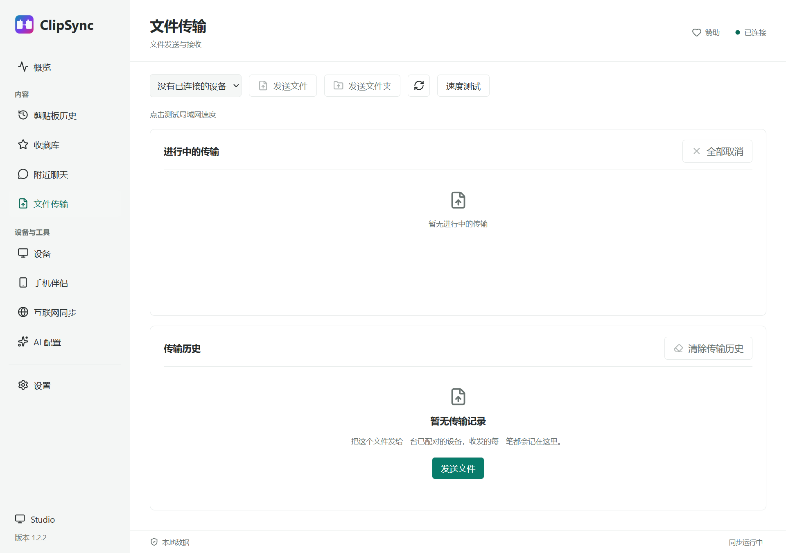
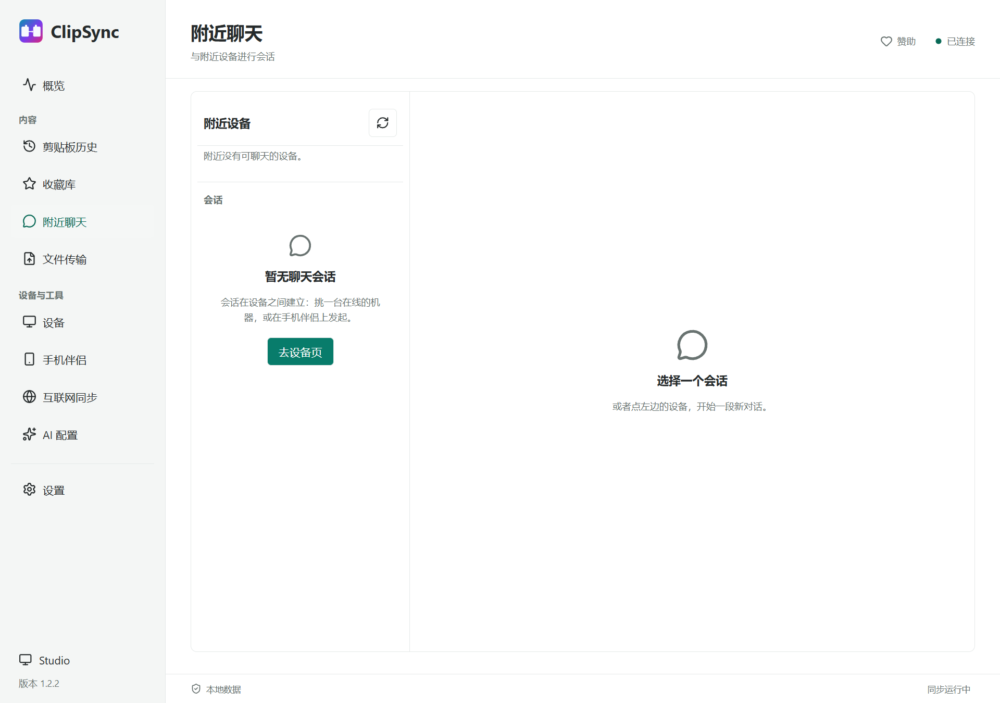
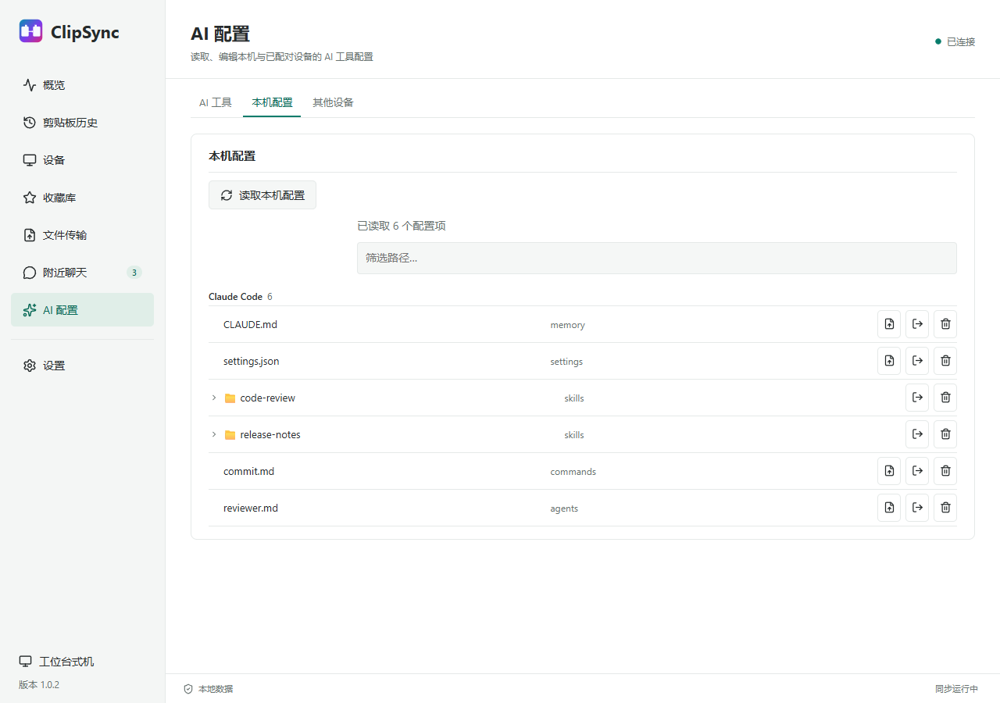
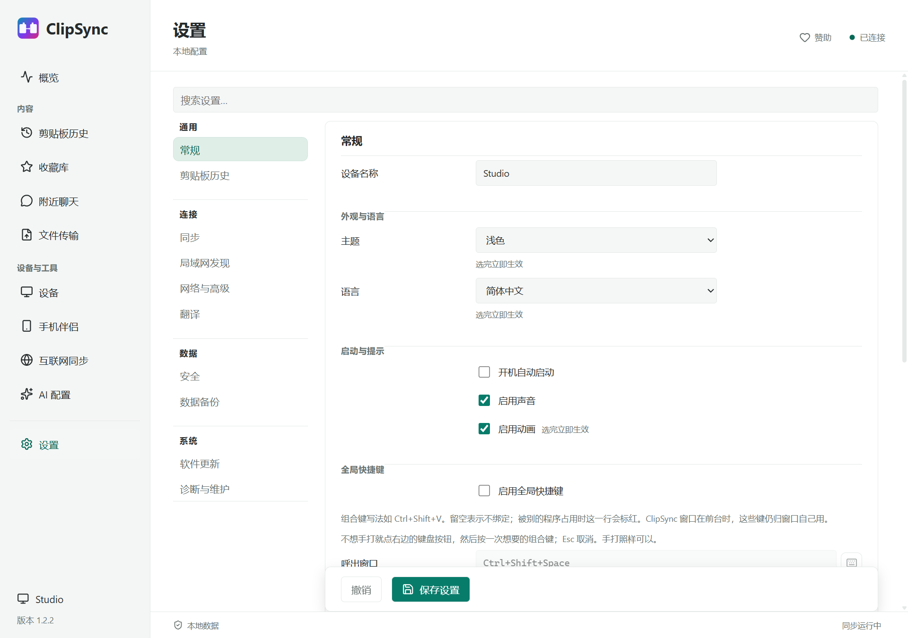
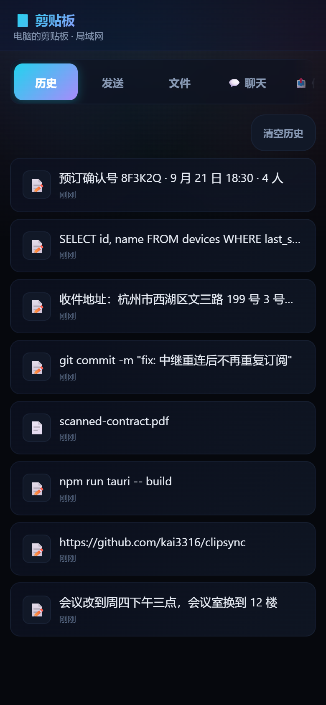

复制完，另一台已经在了
文字、链接、图片和文件，复制后在另一台电脑直接粘贴。两台电脑甚至不同系统也能互传。
跨设备剪贴板 · Windows / macOS / Linux
在几台电脑之间传文字、图片和文件，不用发消息给自己，也不用登录账号。 装好、配对一次，之后就像用同一台电脑一样自然。 手机不用装 App，扫一下二维码就能接着用。
同一 Wi-Fi自动发现内容加密不经过服务器

你得到什么
不是又一个云盘，也不是给自己发消息。复制、粘贴，还是平时的动作，只是跨过了设备。
文字、链接、图片和文件，复制后在另一台电脑直接粘贴。两台电脑甚至不同系统也能互传。
历史里可以搜索、按类型筛选；重要的内容收藏起来，随时找回来接着用。
文件和文件夹拖进窗口，选一台电脑就能发送。大文件不用先传网盘再下载。
电脑上扫一下二维码，手机就能看历史、取内容、传文件，不用安装 App。
公司和家里之间打开「互联网同步」，照常复制粘贴；内容在设备之间加密传输。
同一个 Wi-Fi 下的电脑可以直接聊天、发文件，不用先加好友或配对。
第一次使用
适用场景
不用改变原来的工作方式：复制、粘贴，和平时一样。
| 场景 | 用法 |
|---|---|
| 办公室和家里的电脑 | 不在同一个网络也能继续同步，内容在设备之间加密传输 |
| 台式机和笔记本之间搬内容 | 同一 Wi-Fi 下自动找到对方，配对一次，之后复制就能用 |
| 手机上取电脑里的内容 | 电脑上显示二维码，手机浏览器扫一下，不用装 App |
| 临时给同事或朋友发文件 | 把文件拖进窗口，选一台设备就能发送；同一局域网里不用先配对 |
| 保存常用回复、地址、代码片段 | 放进收藏库，需要时搜一下就能复制回去 |
| 和旁边的设备临时聊两句 | 同一个 Wi-Fi 下的电脑可以直接聊天、发文件，不用加好友 |
界面
所有页面都在左侧栏，点一下就能切换。下面挑几个最常用的给你看看。
同步状态、本机地址、四个快速开关（同步 / 发现 / 可见性 / 远程访问）、网络地图与最近活动。

搜索、按类型筛选、逐条复制 / 收藏 / 翻译 / 删除，支持多选批量操作。两台机器来回复制不会重复同步。

配对、连接测试、设备备注，也可以在这里设置互联网配对和手机访问。

值得保留的内容单独存一份：分组、编辑、拖拽排序、一键复制回剪贴板、导出 Markdown。图片收藏也会直接显示缩略图。

发送文件或文件夹，拖到窗口上即可。传到一半断了可以接着传，失败可以重试，也可以测一下两台电脑之间的速度。同一个 Wi-Fi 下发现到的电脑都能直接发，不需要先配对。

和同一局域网里的设备聊天，不需要先配对，消息和文件直接送达。
想改成逐个确认，在设置 → 局域网发现里关掉「任何人可直接发来消息和文件」和「任何人可直接向我发送文件」这两个开关：之后每条消息、每个文件都要你点「接受」，会先显示对方的设备名称和标识，你确认后再接收。

内置 Claude Code、Codex、Cursor、Gemini CLI、Windsurf、Continue 六套配置。可以先比对差异，再选择覆盖、另存副本或合并。

通用、连接、数据、系统四组，支持直接搜索设置项。语言有简体中文、繁體中文和 English，主题有六种；还包括全局快捷键、过滤规则、保留上限、备份恢复、诊断与更新。
隐私
同一 Wi-Fi 下，电脑之间会直接找到对方；不在同一个网络时，内容会先加密再中转。 两种方式都不需要把内容交给一个云端账号。
[FILTERED]，在设置里选择要遮盖的类型。手机
电脑上会出现一个二维码。手机相机或浏览器扫一下，就能打开同一份剪贴板历史。 在 iOS / Android 上「添加到主屏幕」后，它就像一个小应用一样随手可用。

下载 · 当前版本 1.2.2
下载安装后打开就能用。Windows、macOS、Linux 都支持，互相之间也能同步。
桌面版会在设置里检查新版本，提示后由你决定是否更新。局域网里另一台电脑升级后，也可以直接从它那里更新。
问答
不一定。在同一个 Wi-Fi 下最省事，会自动发现对方；不在同一个网络时，打开「互联网同步」也能继续用。
不用。安装后按屏幕提示连接设备即可，没有账号、没有登录步骤。
在同一个 Wi-Fi 下，内容直接在你的设备之间传输。跨网络时会先加密再中转；中转服务只负责转发，不保存内容。
不用。电脑上显示二维码，手机浏览器扫一下就能打开；也可以「添加到主屏幕」，以后像小应用一样使用。
可以。Windows、macOS、Linux 之间都能互相连接、同步剪贴板和发送文件。
会。关闭窗口只是把它收进托盘，剪贴板同步仍然继续。要真正退出，请使用托盘菜单里的「退出」。
不需要。下载对应系统的安装包，安装后打开就能用。
可以在设置里限制保留数量、查看占用空间，也可以清空全部历史。收藏的内容不会被清空。
在 Finder 里右键点击 ClipSync，选择「打开」，再确认一次。如果仍提示已损坏，可在终端执行：xattr -dr com.apple.quarantine /Applications/ClipSync.app，然后重新打开。
个人和非商业用途免费。如果用于公司业务、收费产品或对外服务，需要先获得商业授权。